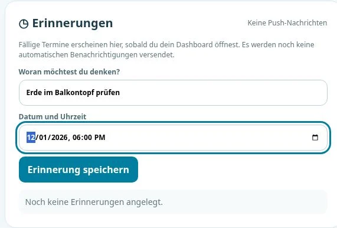

Toolya-Dashboard für Favoriten, Aufgaben und Erinnerungen
Im Toolya-Dashboard findest du deine Lieblings-Tools und zuletzt verwendete Tools wieder. Du kannst außerdem eine persönliche Aufgabenliste führen und Termine mit Datum und Uhrzeit eintragen. Die Übersicht speichert diese Einträge in deinem aktuellen Browser.
Mein Dashboard öffnenDas Toolya-Dashboard Schritt für Schritt nutzen
Ein Tool als Favorit speichern
Öffne die Toolya-Startseite und tippe auf den Stern bei einem Tool, das du häufig verwendest. Öffne dann Mein Dashboard. Unter Deine Favoriten kannst du das Tool direkt aufrufen. Tippe auf der Startseite erneut auf den Stern, um es aus den Favoriten zu entfernen.
Ein zuletzt verwendetes Tool wiederfinden
Öffne ein Tool über die Startseite oder aus der Übersicht. Das Dashboard führt es unter Zuletzt verwendet auf. Tippe dort auf den Namen, um es erneut zu öffnen.
Aufgabe hinzufügen und abhaken
Schreibe unter Meine Aufgaben auf, was du erledigen möchtest, und wähle Hinzufügen. Sobald die Aufgabe erledigt ist, setze das Häkchen neben dem Eintrag.
Erinnerung mit Datum und Uhrzeit eintragen
Gib unter Erinnerungen einen Text ein, zum Beispiel „Erde im Balkontopf prüfen“. Den tatsächlichen Gießtag hältst du im Gießplan fest. Wähle Datum und Uhrzeit und tippe auf Erinnerung speichern. Sobald der Zeitpunkt erreicht ist, steht beim nächsten Öffnen des Dashboards Fällig neben dem Datum. Setze das Häkchen, sobald du die Erinnerung erledigt hast. Mit Entfernen löschst du den Eintrag.
Erinnerungsformular als Bildschirmfoto ansehen

Beispiel: Die nächste Zählerablesung vorbereiten
Markiere Zählerstände auf der Startseite als Favorit. Lege im Dashboard die Aufgabe „Zähler ablesen“ und die Erinnerung „Am 1. Dezember ablesen“ für den 1. Dezember um 18 Uhr an. Wenn vorher keine anderen Einträge vorhanden waren, zeigt die Übersicht jetzt einen Favoriten, eine offene Aufgabe und einen anstehenden Termin.
Öffne am Tag der Ablesung das Dashboard und wechsle über den Favoriten zu Zählerstände. Speichere dort den abgelesenen Wert. Hake die Aufgabe danach im Dashboard ab und hake auch die Erinnerung ab. So bleibt sie in der Liste sichtbar, zählt aber nicht mehr zu den offenen Erinnerungen.
Was bleibt im Browser und was gehört zum Konto?
Favoriten, zuletzt verwendete Tools, Aufgaben und Erinnerungen bleiben in diesem Browserprofil. Wenn du die Website-Daten löschst, kann die Übersicht leer werden. Der Zählerstand aus dem Beispiel gehört dagegen zu deinem Toolya-Konto und steht im Zähler-Tool mit demselben Konto auch auf einem anderen Gerät zur Verfügung.
Wo finde ich die Anleitungen zu meinen Tools?
Auf der Startseite im Ratgeberbereich führt jede Karte zur öffentlichen Anleitung. Im Dashboard öffnen die Karten der Favoriten das jeweilige Tool.
Häufige Fragen zum Toolya-Dashboard
Bekomme ich eine Nachricht, wenn ein Termin fällig ist?
Fällige Erinnerungen erscheinen beim Öffnen des Dashboards. Das Dashboard verschickt keine automatischen Nachrichten per Push oder E-Mail.
Wie verschiebe ich eine Erinnerung?
Lege eine neue Erinnerung mit dem gewünschten Zeitpunkt an. Wenn der neue Eintrag in der Liste erscheint, wähle beim alten Eintrag Entfernen.
Sehe ich meine Aufgaben und Favoriten auch auf einem anderen Gerät?
Das Dashboard liest Favoriten, zuletzt genutzte Tools, Aufgaben und Erinnerungen aus dem aktuellen Browser. Auf einem anderen Gerät oder in einem anderen Browserprofil kann diese Übersicht deshalb leer sein.
Brauche ich ein Konto für das Dashboard?
Das Dashboard kannst du direkt öffnen. Die Anmeldung für ein einzelnes Tool richtet sich nach dem jeweiligen Tool.